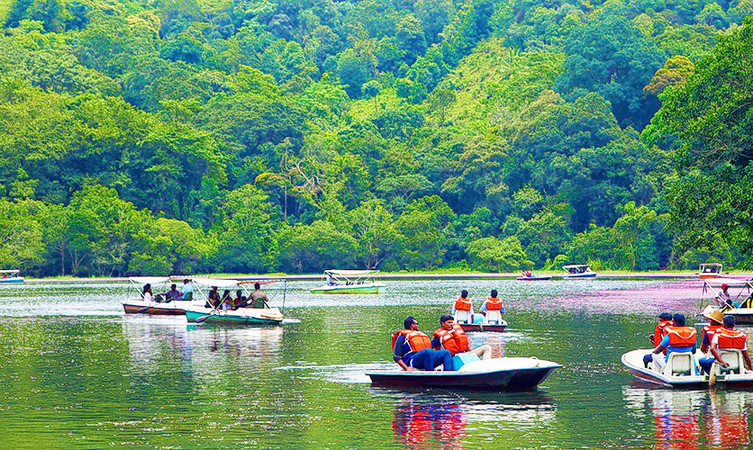

Chembra Peak
A trekking paradise, Chembra is the highest peak in the Wayanad Hill Range that will take your breath away. Encompassed by verdant greenery of the Western Ghats, Chembra Peak is one of those attractions in Wayanad that one just cannot ignore for its mesmerising views. It is where the clouds brush your cheeks and your eyes are greeted with solace of calm and quietness in the midst of nature. It is known for offering an enchanting vista of the heart-shaped lake also known as the Cupid Lake. It also offers an unparalleled view of Banasura Sagar Dam surrounded by the majestic tea plantations located along the foothills of Chembra Peak.
Banasura Sagar Dam

One of the most spellbinding places to visit in Wayanad, Banasura Sagar Dam is a picturesque tourist hotspot. Known for being India’s largest earthen dam, it boasts of extensive natural beauty with beautiful flora and fauna, majestic hills and mesmerising waterfalls. The Banasura Sagar is a photographer’s delight and offers the most beautiful views from the top of the hill. It is also famous among adventure enthusiasts who look forward to thrilling activities like boating, trekking, horse racing and camel rides. For the avid trekkers, Banasura hill peak is hailed as one of the most challenging treks. Along with that Banasura Hill Resort adds to the charm of this place that is known as the only ‘earthen’ resort in the country.
Kuruva Island

Located in the middle of Kabini river, Kuruva Island is a natural paradise that is replete with diverse flora and fauna in the most beautiful surroundings. It is blessed with evergreen forests all around that makes it a mesmerising picnic spot away from all pollution and noise of the city. One of the most exciting things about Kuruva Island for tourists is their famous boat rides on bamboo rafts. Trekkers also visit Kuruva Island to explore the pristine environment and witness the most exotic species of plants, animals and birds here. The enthralling beauty of this island attracts many people who wish to escape the hustle and bustle of their lives and surround themselves in the serenity of nature.
Pookode Lake
Pookode Lake should incite your curiosity. Surrounded by the evergreen beauty of Western Ghats and verdant forests, Pookode Lake is a gorgeous freshwater lake. One of the most interesting features of this lake is that it virtually appears to be in the shape of India’s physical map. Boasting of picturesque excellence and a mesmerising ambience, this freshwater lake is the initiating point of Panamaram stream in Kerala. Pookode Lake offers many activities like boating and boasts of a freshwater aquarium, a children’s park and a shopping centre where tourists can empty their pockets on excellent spices and handicrafts. Another big attraction of Pookode Lake is the widespread presence of wild animals and birds who can be spotted around the lake.
Tholpetty Wildlife Sanctuary

It is famous for harbouring a diverse number of flora and fauna. Taking a wildlife safari is the most thrilling activity that one should undertake at Tholpetty Wildlife Sanctuary to make their Wayanad vacation memorable. This natural habitat is a great sightseeing place to spot elephant herds, deer, langurs, panthers, tigers, Indian bison and the rare Slender Loris. Moreover, this wildlife sanctuary offers a wonderful experience for tourists with their tree huts which are open for stay. This beautiful attraction allows the tourists to seek some natural solace and take delight in the company of the wonderful wildlife roaming freely in their natural surroundings.
Edakkal Cave
Travel back in time to the Stone Age with a visit to Edakkal Caves that are located on the Ambukuthi Hills. Edakkal literally translates to ‘a stone in between’ and this cave and showcases a natural masterpiece. It is associated with many myths and considered as one of the most sacred places to visit in Wayanad. Edakkal caves are not actually considered to be caves in a scientific sense yet remain a great piece of archaeological curiosity for tourists. These caves are identified as a Neolithic settlement and present the evidence of a pre-historic society of highly civilised people. These caves draw in a number of history buffs and students of archaeology who wish to explore these mysterious caves.
Lakkidi View Point
Famous for its mesmerising scenery, Lakkidi View Point is known for its nine hairpin caves and offers a resplendent view of the mountains in Wayanad. The whole trip of Lakkidi View Point promises an unforgettable charm of natural beauty that should add to their bucket list of attractions in Wayanad. Offering a bird’s eye view of the magnificent surroundings, this place leaves you in search of words to describe the panoramic vista that your eyes behold. It is also a famous picnic spot and often known as the ‘Gateway of Wayanad’. Lakkidi is also known for receiving the second highest rainfall in the world and its misty environment makes it an unforgettable tourist place in Wayanad.
Neelimala View Point

Promising one of the most enthralling trekking experiences in Wayanad tourist places, Neelimala View Point is a must visit for adventure aficionados. It presents some amazing trails that cross the most picturesque landscape of Western Ghats. Tourists are in for a charming surprise as Neelimala View Point offers gushing streams and verdant valleys on the way up to the hill. This place is a splendid tourist spot where you can appreciate the company of nature with the misty clouds and its pristine ambience. This beauty of this popular trekking and camping site is accentuated by the Meenmutti waterfall that brings out the most wonderful view of the place.
Soochipara Waterfalls
Deriving its name from the needle-shaped rock that is placed here, Soochipara Waterfalls is one of the most photogenic spots for tourists in Wayanad. This beautiful waterfall is also known as Sentinel Rock Waterfalls and surrounded by lush greenery that is just a treat for the eyes. The waterfalls can be reached after a thrilling downwards trek or enjoy the spectacular views from the tree-top hut. Soochipara Waterfalls is a refreshing retreat to indulge in activities like swimming, water rafting and rock climbing for adventure enthusiasts in Wayanad. This three-tiered waterfall is one of the most exciting places to visit in Wayanad.
Wayanad Wildlife Sanctuary
Wayanad Wildlife Sanctuary is an esteemed natural habitat of many rare and endangered flora and fauna and a wonderful getaway for wildlife lovers. It is one of those rejuvenating retreats where people can appreciate sustainable tourism with a bit of adventure and recreation. The two most important areas in Wayanad Wildlife Sanctuary is Muthanga and Tholpetty. Offering an excellent opportunity to see the elephant herds, deer, langurs and tigers roam freely in Wayanad Wildlife Sanctuary is an absolute delight. Tourists here can also indulge in bird watching or undertake trekking in the forest with advance booking. Being a vital part of Nilgiri Biosphere reserve, Wayanad Wildlife Sanctuary is a biodiversity hotspot that one must add to their places to see in Wayanad.